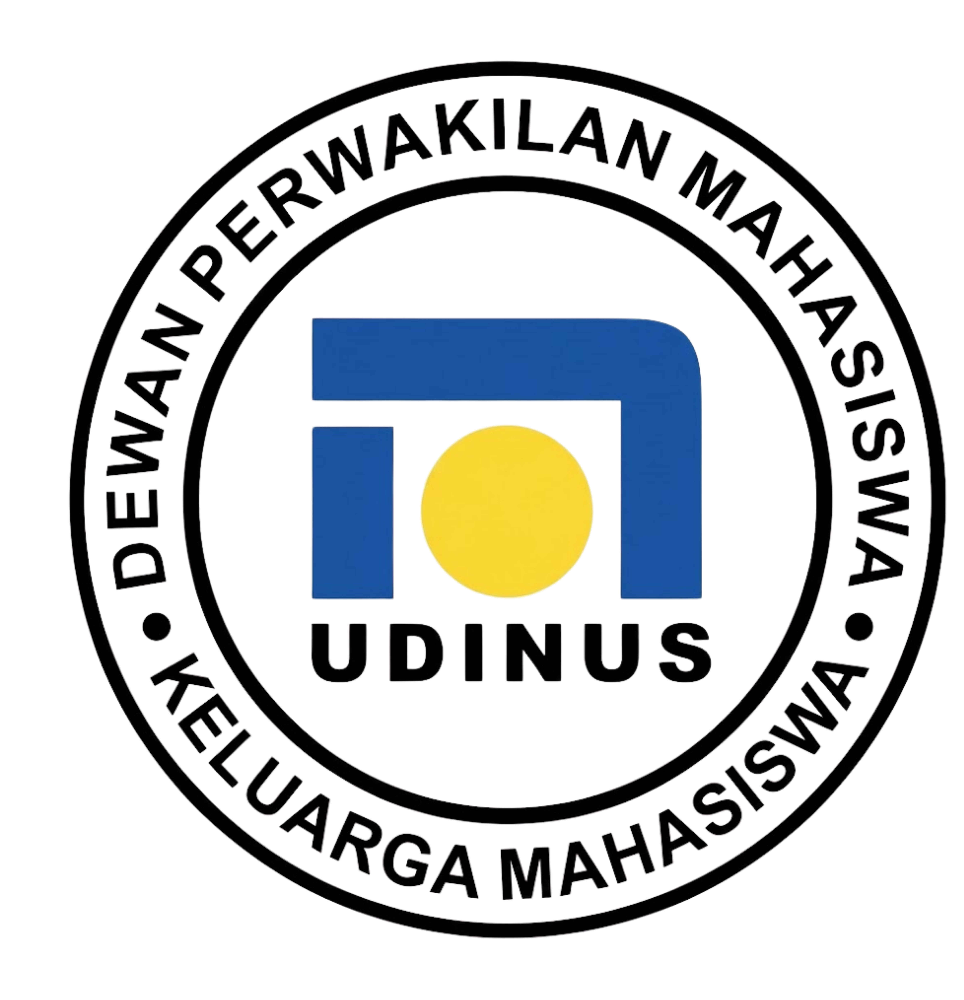
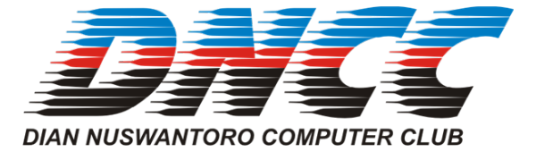
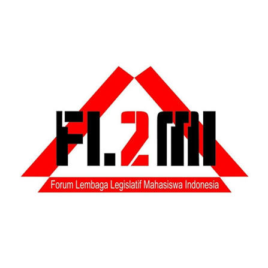
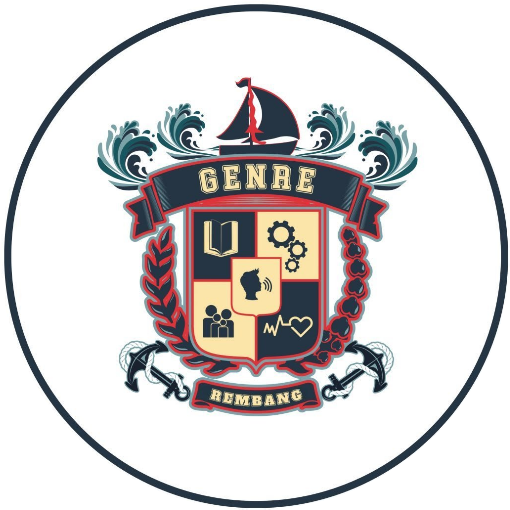

Experience
Here is a quick summary of my most recent experiences:

Computer Administrator, Intern
BBPVP Semarang (Balai Besar Pelatihan Vokasi dan Produktivitas)
- Co-developed and managed the Activity Report Management System project for Short Course Vocational Training to digitalize and streamline reporting.
- Performed routine maintenance, installation, and configuration of hardware and software to ensure smooth IT operations.
- Assisted in periodic internal data management and digital inventory systems to maintain the accuracy of the institution's information technology assets.
- Served as a multimedia equipment operator responsible for audio-visual support in the implementation of various training activities.

IT Team (IT Division Staff), Contract Employee
CV. Garuda Karya Solution
- Managed administration and inventory, responsible for recording, monitoring, and reporting the circulation of incoming and outgoing data and goods.
- Involved in network infrastructure projects and automated parking barrier systems at various strategic institutions, including the Regional Police (Polda), Police Academy (Akpol), and Bhayangkara Akpol Hospital.
- Assisted in the installation and configuration of commercial and industrial-scale surveillance systems (CCTV) at various locations, including Madukoro Square, Kendal Industrial Park (KIK), and Wijayakusuma Industrial Park (KIW).

Web Developer, Intern
Koperasi Karyawan PLN Lumintu
- Completed the development project of the Employee Cooperative System end-to-end (from planning stage to release) during a full 1-year contract period.
- Built a web-based financial application using the Laravel framework to digitalize operations and improve the efficiency of cooperative administration.
- Optimized team collaboration, document management, and data reporting by leveraging and integrating the Google Workspace ecosystem.
- Designed and managed databases and conducted system testing on transaction verification to ensure the accuracy, security, and transparency of cooperative financial data.

Freelance / Project-Based
Liaison Officer (LO), Event Consultant & Tour Guide
- Acted as an event consultant and personal Liaison Officer, demonstrating strong problem-solving skills under pressure to ensure smooth artist performances.
- Demonstrated a track record of managing the needs of large-scale guest stars such as Souljah in 2018, Ndarboy Genk in 2019, Damara De in 2023, and Massdhoo in 2024.
- Contributed to the early-stage operational team, focusing on logistics management and real-time data coordination to ensure the Rembang Color Fun event's success.
- Served as a tour guide and field coordinator to facilitate various working visit programs for government agencies from outside the region.
- Ensured smooth mobility, schedule management, and participant comfort during trips, with specific experience handling groups from the Katingan Regency Health Office and the Kotawaringin Barat Tourism Office.
Organization
My Leadership & Organizational Experience
2023Mulai
2025Selesai
Semarang, IndonesiaLokasi
Majelis Permusyawaratan Mahasiswa Keluarga Mahasiswa Universitas Dian Nuswantoro
Board of Authority
2023 - 2025
2021Mulai
2024Selesai
Semarang, IndonesiaLokasi

Dewan Perwakilan Mahasiswa Keluarga Mahasiswa Universitas Dian Nuswantoro
General Chairman
2023 - 2024
Head of Legislation Board
2022 - 2023
Expert Staff of Legislation Board
2021 - 2022
2021Mulai
2025Selesai
Semarang, IndonesiaLokasi

Dian Nuswantoro Computer Club (DNCC)
Board Member
2021 - 2025
2022Mulai
2023Selesai
Semarang, IndonesiaLokasi

FL2MI Semarang Raya
Member of Commission 4
2022 - 2023
2017Mulai
2023Selesai
Rembang, IndonesiaLokasi

Forum Genre Kabupaten Rembang
Board Member
2017 - 2023
2017Mulai
2021Selesai
Rembang, IndonesiaLokasi
Forum Anak Rembang
Board Member
2017 - 2021